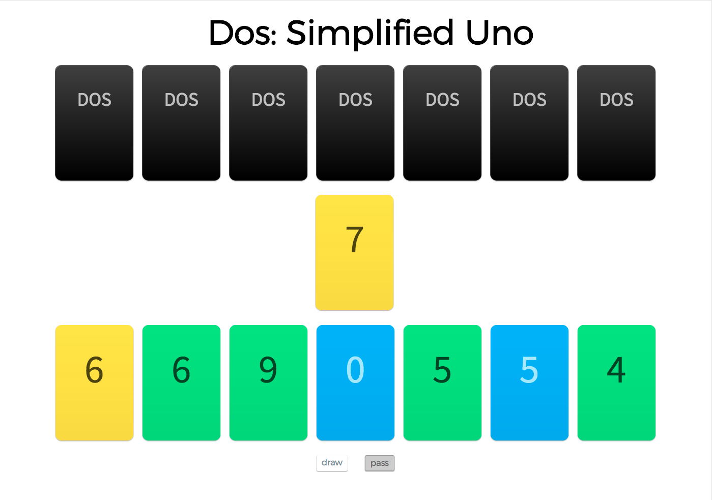

How To Play
Just like in Uno, the object of Dos is to empty your hand before the opponent does.
The game works similar to Crazy Eights where you must aim to match the top card on the discard pile with a similar card in your hand. Your options include any card with the same color, any card with the same number, or any wild card.
If you are unable or unwilling to match the top card on the discard pile. You may choose to draw a card. At that time, you can choose to play your newly drawn card or pass your turn to your opponent.
Special Cards
Skip
Skip the other player's turn.
Draw Two
Force your opponent to draw two cards.
Wild
Change the color of the top card on the discard pile.
Wild Draw Four
Change the color of the top card on the discard pile and force your opponent to draw four cards.
How is this different from Uno?
This game was designed to be single player only.
Reverse cards do not exist.
Draw Two does not skip the opponent's turn.
You may choose to play a different card than the one you drew.
Uno does not need to be declared.
About Me
I am a software developer focused in the San Francisco Bay Area. This JavaScript project was designed to showcase Object Oriented Programming using Webpack. You can find my other works on my github link below.